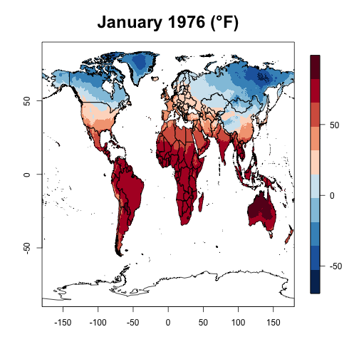

Mark Fischer
Final Project - Developing Data Products
July 23, 2016
Average Monthly Climate Data
This presentation is created to satisfy the peer review final project requirements to pitch the final shiny web app. The importance of understanding the global climate situation is critical for all. Efforts like the Climate Data Center highlight the one of many repositories around the world collecting climate data.
Final Project Web App
Utilize the R Shiny package to create a dynamic web application. The Developing Data Products class introduced the shiny and slidify package constructs to create useful and dynamic data representations. The shiny package allowed for the creation of a climate mapping and delta temperature application. http://fischm67.shinyapps.io/Final_Proj
The application utilizes the sidebarpanel/mainpanel theme. The sidebar panel creates selectInput boxes to allow the user to choose the Year and Month for each climate plot. A delta plot is also created to represent the change over time for the average monthly global climate. After the Year/Month selection a "Make/Update Plots" button needs to be pressed to create the plots.
The data for the app hosted on shinyapps.io utilized a reduced dataset from 2001-2010. The link included with the app points to a larger dataset containing data from 1900-2014.
The explosion of data visualization and analysis tools available through open source allow for the creation of climate maps like these.
 The importance of which can't be underestimated.